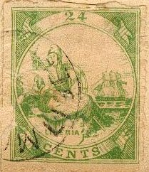
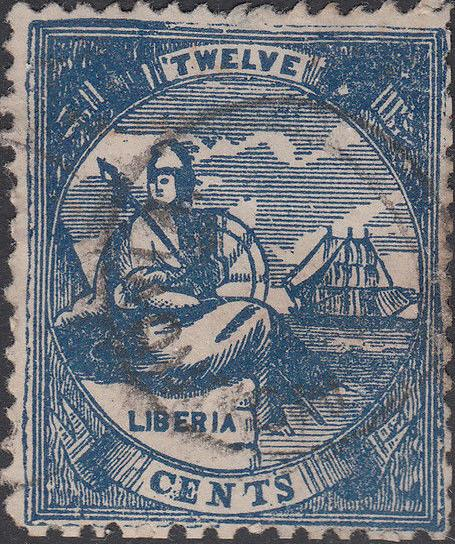

Return To Catalogue - Liberia 1860-1880 - Liberia 1860-1880, forgeries, part 2
Note: on my website many of the
pictures can not be seen! They are of course present in the
catalogue;
contact me if you want to purchase it.
If my information is correct, more than 50 different kinds of forgeries exist of these stamps. The genuine stamps have different background patterns for the different values. Many forgers have used the same background pattern for all values (except Fournier).

In the 6 c Spiro forgery, the toe of the woman touches the border. These forgeries were already described in 'The Stamp Collector's Magazine' in 1864 (1st October, page 155).
The above stamps have as cancel "MONPOWA LIBERIA". There is a white line all across the bottom part of the ship, which is missing in genuine stamps. I've been told that these could be Spiro forgeries as well. I've seen the 6 c value with "SIX" placed too low (see image above).
Fournier forgeries (obtained from the Forgeries idenfication site of Bill Claghorn: http://geocities.com/claghorn1p/). These stamps were taken from the Fournier album (an album with Fournier forgeries). The forgeries that Fournier sold didn't bear the overprint "FAUX" (=forgery in french), of course! All the cancelled Fournier stamps that I have seen bear the cancel "MONROVIA 7 JAN 64 LIBERIA". Fournier forgeries are the most deceptive forgeries of the Liberia 1860-1880 stamps.


Two other forgeries of the 6 c with a "MONROWA LIBERIA"
cancel. Besides it a 24 c forgery apparently made by the same
forger (note the shape of the rock at the right hand side). This
forgery sometimes exist with an additional "Franco"
cancel, (see the 24 c above).


Forgery with the "C" of "CENTS" under the
"LI" of "LIBERIA". Also note the peculiar
shape of the "C". It looks like the cloudy background
has some kind of 'signature' in it, quite similar to some
forgeries of the first set.
 

A forgery with a very strange sky. I've seen the value 12 c blue
of this particular forgery as well (it is illustrated as forgery
17 in Philip Cockrill's Liberia; 'Forgeries of the first issues
1860-1880'). This booklet also mentions a 2 c in the same design.
Note the peculiar clouds in the background.
Some of the above forgeries have a "MONROVIA." in a circle cancel (such a cancel does not exist on the genuine stamps), which also exists on the Seventh set of forgeries.
An image from the catalogue of Placido Ramon
de Torres "Album Illustrado para Sellos de Correo"
of 1879, page 152, in a similar design (information passed to me
thanks to Gerhard Lang, 2016).


Two forgeries of the 6 c value (two different colors) made by the
same forger. The first forgery has a smudged red cancel and the
second one a violet "MONROVIA." in a circle cancel
(such a cancel does not exist on the genuine stamps). Note the
damaged bottom left part of the stamps.
This forgery might have been made by the same forger who made the Sixth set of forgeries.
Stamps - Timbres-Poste - Briefmarken


{kind=link}
{kind=link}
{kind=link}
{kind=link}